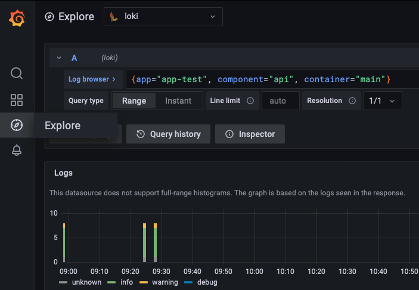
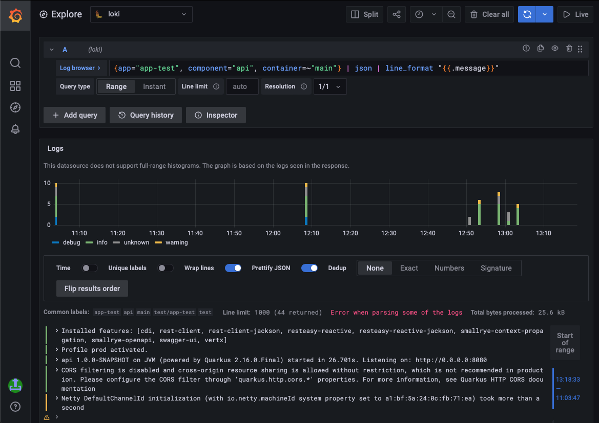
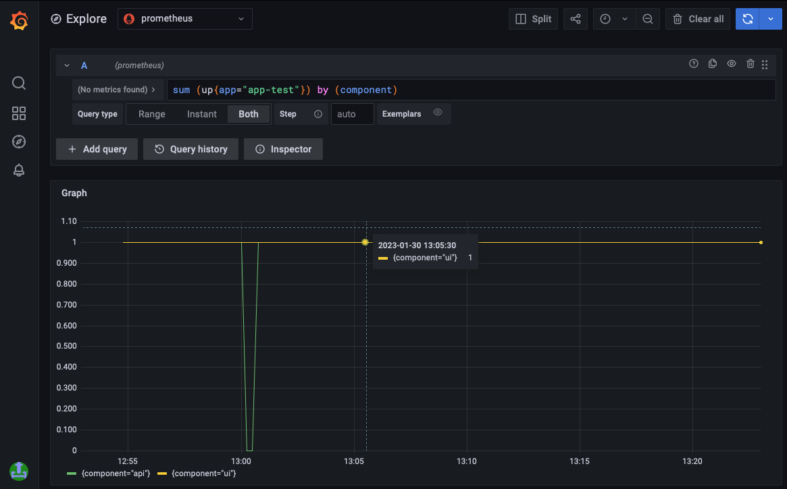

Table of Contents
Telemetry
Telemetry data jointly refers to logs, metrics, traces and other diagnostic data of your app.
Logging
Application logs can be accessed in Grafana:
In the Explore tab, logs can be searched by selecting Loki as datasource.

Search in Logs
Logs can be search using LogQL.

Here are a few examples to start with:
- Select logs for the
app-test’sapicomponent from themaincontainer:{app="app-test", component="api", container="main"} - Find logs containing the word
NullPointerExceptionin the logs{app="app-test", component="api", container="main"} |= `NullPointerException` - Select logs for multiple containers:
{app="app-test", component="api", container=~"main|authz|envoy"} - Select logs by querying a json property (works with JSON logs only)
{app="app-test", component="api", container=~"main"} | json | level="WARN" - Print only part of a JSON log entry:
{app="app-test", component="api", container=~"main"} | json | line_format ""
Live Logs
To follow logs of an app’s component, select the relevant logs by label and click the Live button, the logs will update automatically.
Metrics
Application metrics can be accessed in Grafana:
In the Explore tab, metrics be explored by selecting Prometheus as datasource.

Metrics can be explored using PromQL.
Here are a few examples to start with:
- Select the
upmetric and sum by component:sum (up{app="app-test"}) by (component) - Show absolute memory usage in MB
avg(container_memory_working_set_bytes{pod=~"app-test-api-.*", container=~"main"}) by (pod, container) / 1e6 - Show memory usage relative to limits
avg(container_memory_working_set_bytes{pod=~"app-test-api-.*", container=~"main"}) by (pod, container) / avg(kube_pod_container_resource_limits{pod=~"app-test-api-.*", container=~"main", resource="memory"} > 0) by (pod, container) - Show memory usage relative to requests
avg(container_memory_working_set_bytes{pod=~"app-test-api-.*", container=~"main"}) by (pod, container) / avg(kube_pod_container_resource_requests{pod=~"app-test-api-.*", container=~"main", resource="memory"} > 0) by (pod, container)
Custom Metrics
If the application wants to monitor its own metrics, this can be done be defining the metrics endpoint as follows:
deployments:
api:
container:
metrics: /my-app/api/metrics
In this case the endpoint /my-app/api/metrics will be scraped and the exposed metrics can be explored as described above. This endpoint will be available only from within the Kubernetes cluster. It will not be possible to access the metrics endpoint via the ingress (for example https://unity.bmwgroup.net/my-app/api/metrics will be forbidden).
Using a labeling where the cardinality of the value set is high (e.g. email address) can dramatically increase the amount of data stored (for more information please refer to Prometheus’s official guide). Therefore, there are some limitations regarding the custom metrics to prevent overloading and killing the time series database:
- The maximum number of labels per sample is 10
- The maximum number of samples per scrape is 200
ITSM Alerting
It is possible to define Prometheus Alerting Rules which can be configured to trigger incident creation. The prerequisite for this is a valid monitor contract ID (MCID) which can be created in the Application Monitoring Database.
An alert can then be configured as follows:
appId: APP-1234
deployments:
api:
replicas: 1
container:
# Container configuration
alerts:
foo_total:
description: Foo_total has reached 10 for label 'prom-rule-test'.
expr: foo_total{metric="prom-rule-test"} > 10
for: 10m
labels:
# itsm_app_id: APP-789 # optional APP-ID from the MCID. Only required if different from the appId provided above
itsm_contract_id: 10APP123456789 # your MCID from the Application Monitoring Database
itsm_enabled: true
itsm_event_id: foo_total_reached_10
itsm_severity: MINOR
severity: other
summary: Foo_total is greater then 10
For more information regarding alerts integration please refer to 4Wheels Managed documentation.
Tracing
Tracing is not available yet.